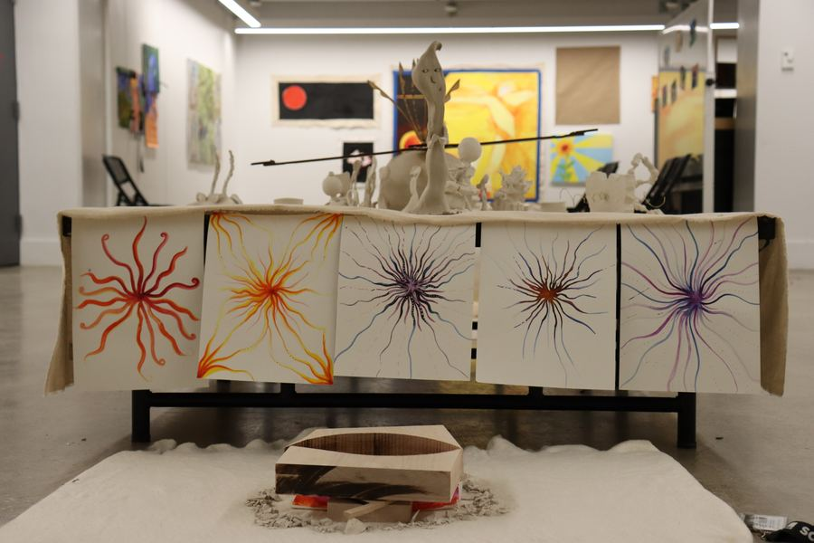

My writing was selected for the CGA Press Creative Writing Prize, awarded to one student across all age levels at Crimson Global Academy.
Mi texto fue seleccionado para el Premio de Escritura Creativa CGA Press, que se otorga a un solo estudiante entre todos los niveles de Crimson Global Academy.
Muses of Apollolaunchessale al airePodcastPódcast
My classmate Sarah and I started The Muses of Apollo, a podcast about how art connects to music, drama, literature, math and science. Listen on Spotify.
Mi compañera Sarah y yo creamos The Muses of Apollo, un pódcast sobre cómo el arte se conecta con la música, el teatro, la literatura, las matemáticas y la ciencia. Escúchalo en Spotify.
SAIC Summer Institute & exhibitionSummer Institute de SAIC y exposición
Three weeks in Chicago on a merit scholarship: 20+ works, 10 critiques, and a lot of learning to let mistakes stay in the piece. The session ended with a student exhibition at SAIC, where I installed The Vision Collection.
Tres semanas en Chicago con beca por mérito: más de 20 obras, 10 críticas y mucho aprendizaje para dejar que los errores se queden en la pieza. La sesión cerró con una exposición de estudiantes en SAIC, donde instalé La colección Visión.

Service, hot chocolate and communityServicio, chocolate caliente y comunidadWritingEscritura
During a four-week service-learning program in Costa Rica with Putney Student Travel, I helped build a road with the community, played soccer with local kids, filmed a 30-minute documentary, and wrote about a rainy day of work and hot chocolate for the program blog. Read the post.
Durante un programa de aprendizaje-servicio de cuatro semanas en Costa Rica con Putney Student Travel, ayudé a construir un camino con la comunidad, jugué fútbol con niños del lugar, filmé un documental de 30 minutos y escribí sobre un día lluvioso de trabajo y chocolate caliente para el blog del programa. Leer la publicación (en inglés).